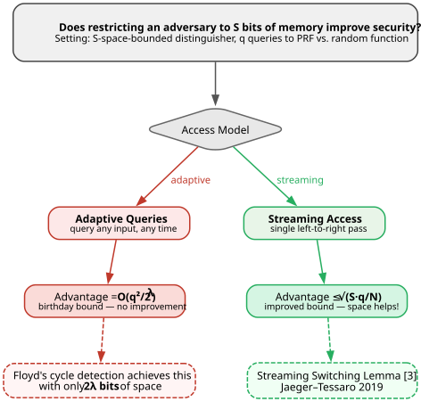
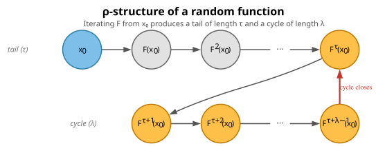
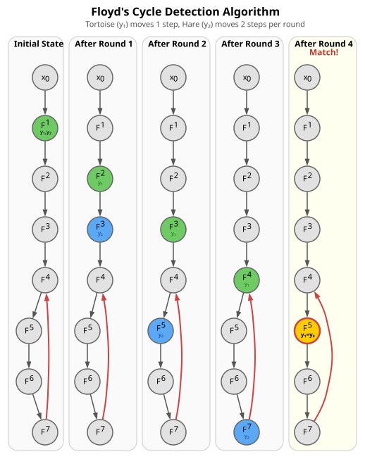
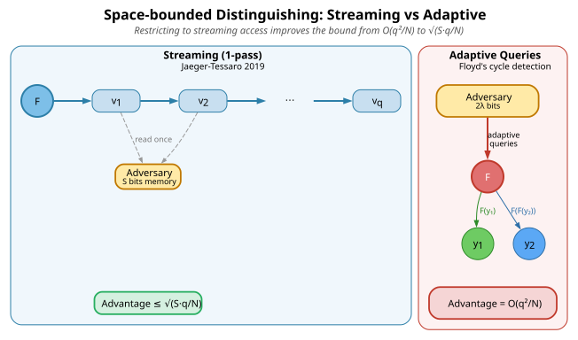

Space bounded adversaries
Space-bounded Adversaries
Central question: Does limiting an adversary's memory improve security? Concretely, if a distinguisher trying to tell a PRF apart from a truly random function is restricted to \(S\) bits of space, can it still achieve the birthday-bound advantage \(O(q^{2}/2^{\lambda})\)?
The answer depends on the access model:
- With adaptive queries (the adversary can query any input at any time): yes — space-bounding alone provides no improvement.
- With streaming access (a single left-to-right pass over the output): no — the bound improves to \(\sqrt{S \cdot q / N}\).

- Suppose an adversary is space bounded by \(S \ll q\), where \(q\) is the number of queries
- It can still distinguish between real/ideal world using adaptive queries with advantage \(O(q^{2}/2^{\lambda})\) and space \(2\lambda\)
- Adaptive queries means that an adversary can query any point any time (contrast with the streaming model where the adversary gets a single pass over the output)
- The matching algorithm is Floyd's cycle detection [1], also used in Pollard's \(\rho\) method [2]:
- Adversary keeps two pointers \(y_1=F(x_0)\) and \(y_2=F(x_0)\)
- It updates \(y_1 = F(y_1)\), \(y_2 = F(F(y_2))\) and checks if \(y_1 = y_2\) after each update
- They will eventually meet for any function on a finite domain (by the pigeonhole principle). For a random function \(F: \{0,1\}^{\lambda} \to \{0,1\}^{\lambda}\), the expected meeting time is \(O(2^{\lambda/2})\)
- This shows that space-bounding alone does not improve the birthday bound when the adversary can make adaptive queries. This motivates the streaming restriction in the Streaming Switching Lemma [3], which achieves the improved bound \(\sqrt{S \cdot q / N}\) by limiting the adversary to a single pass
The $ρ$-structure of a random function
Any function \(F: [N] \to [N]\) iterated from a starting point \(x_0\) produces a sequence that eventually enters a cycle. This is called the $ρ$-structure (after the shape of the Greek letter \(\rho\)).

For a random function on \([N]\), both the tail length \(\tau\) and cycle length \(\lambda\) are \(O(\sqrt{N})\) in expectation.
Floyd's cycle detection algorithm
Floyd's algorithm detects this cycle using only two pointers (\(2\lambda\) bits of space). The "tortoise" \(y_1\) advances one step per round, while the "hare" \(y_2\) advances two steps. They are guaranteed to meet inside the cycle.

Streaming vs adaptive: why the access model matters
The key motivation for the Streaming Switching Lemma is that adaptive queries (as in Floyd's algorithm) bypass the space bound. The streaming restriction recovers improved bounds.
